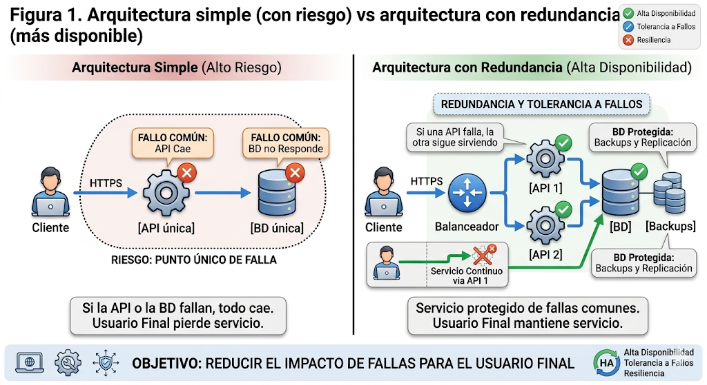

En arquitectura, alta disponibilidad (HA) significa diseñar el sistema para que esté “casi siempre” disponible. Tolerancia a fallos significa que, si una parte falla, el sistema sigue funcionando (total o parcialmente) sin detenerse por completo. Resiliencia es la capacidad de resistir fallas y recuperarse rápido.
En un nivel básico, el objetivo es claro: reducir el impacto de fallas comunes (un servidor que se apaga, una aplicación que se cae, una base de datos que no responde) para que el usuario final no pierda el servicio.

Figura 1. Arquitectura simple vs arquitectura con redundancia
Figura 1. Arquitectura simple (con riesgo) vs arquitectura con redundancia (más disponible).